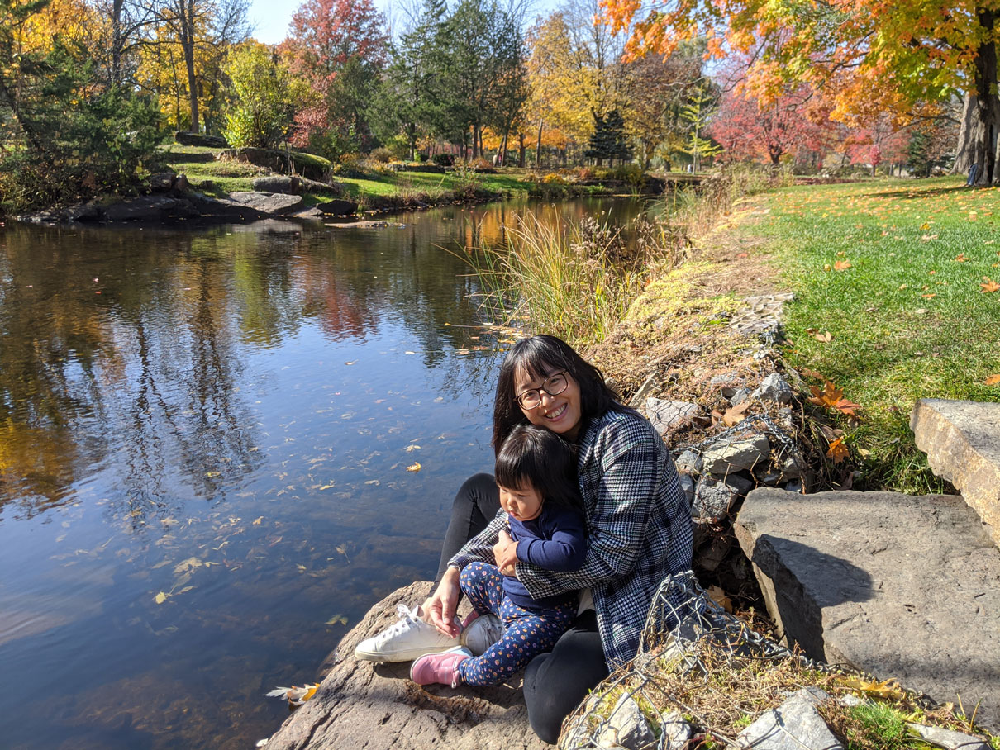

About Me
I come from Taiwan, a beautiful and people-friendly island. This is the 3rd year of living in Canada. I am full-time with two kids, my son is four years old, and my daughter is one and a half. I was a special education teacher in a public elementary school before I came to Canada. For my husband and kids’ education and living environment, everything I did is worth it!
Before I became a mother, I enjoy doing crafts and have a strong passion for design and arts in my leisure time. I used to integrate my hobbies into my teaching and teaching materials. I came to the IMD program because this is my second chance to learn what I am really interested in to become my future job.